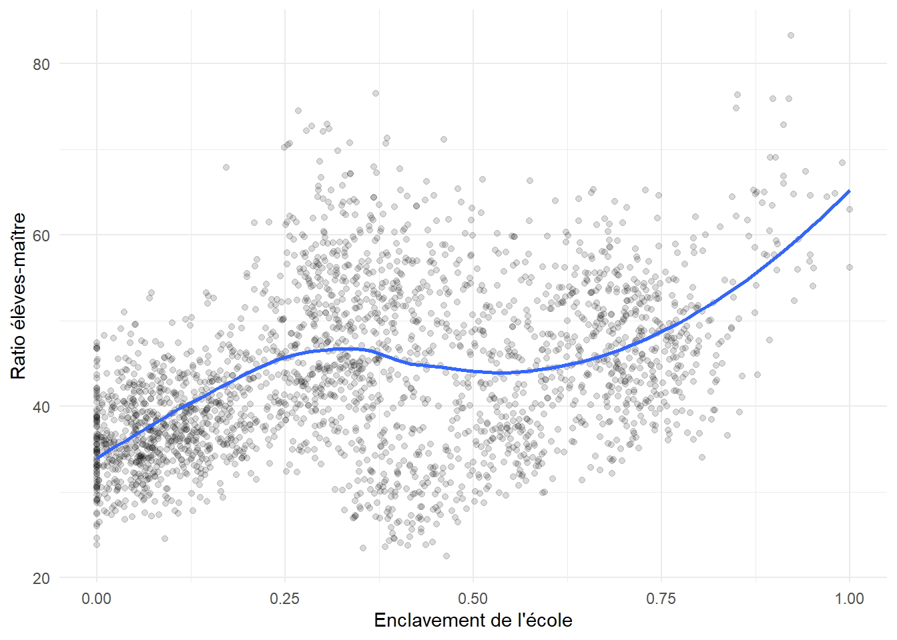

# ---------------------------------------------------------------------------
# SPINE for the "Sénégal" series. It builds ONE coherent synthetic universe.
# Design philosophy:
# * The spine writes the STRUCTURE (geography, schools, teachers, preschool
# centres) and a LATENT "truth" layer (governance, remoteness, school
# quality, pupil-teacher ratio, teacher attendance propensity, pupil ability).
# * Each downstream volet GENERATES ITS OWN OBSERVED DATA from these latents
# (e.g. V3 simulates 3 noisy attendance waves; V4 simulates item responses
# with injected DIF). Same latents everywhere => analyses stay articulated.
# Everything is parameterised in the `params` chunk; nothing is hard-coded later.
# ---------------------------------------------------------------------------
library(dplyr)
library(tidyr)
library(purrr)
library(tibble)
library(ggplot2)
library(readr)
set.seed(50) # reproducibility for the whole series anchorSérie Sénégal — Socle de données intégré
Un univers éducatif sénégalais simulé, cohérent, alimentant tous les volets
R
simulation
data-engineering
education
Senegal
EMIS
multilevel
reproducibility
Pièce fondatrice du bac à sable « Sénégal » : un générateur unique qui simule un système éducatif sénégalais structurellement vraissemblable — 14 régions, inspections d’académie (IA), inspections de l’éducation et de la formation (IEF), écoles élémentaires, enseignants et centres préscolaires. Le socle produit une couche de variables latentes (« vérité ») et les liens causals qui la traversent (gouvernance, enclavement, ratio élèves-maître, présence enseignante, niveau des élèves), de sorte que chaque volet en aval consomme la même réalité et que les analyses soient mutuellement articulées. Sorties : un jeu de fichiers CSV canoniques et un contrat de données documenté. Code R entièrement paramétré et annoté pour réemploi.
params <- list(
# --- Scale (a deliberately scaled-down but structurally realistic universe) -
n_ecoles = 2500L, # elementary schools simulated
n_prescolaire = 3500L, # preschool centres simulated (feeds V5)
ief_total_hint = 55L, # target number of IEF nationwide
n_reform_ia = 6L, # IA piloting "strengthened deconcentration" (V1 treatment)
# --- Pupil-teacher ratio (PTR) model: PTR_s on the log scale ---------------
ptr_base = 40, # national target PTR
b_remote_ptr = 0.45, # remoteness inflates PTR (under-staffing of remote areas)
b_gov_ptr = 0.10, # better governance lowers PTR (more equitable allocation)
b_reform_ptr = 0.30, # the deconcentration reform lowers PTR (the effect V1 estimates)
sd_ptr = 0.12, # idiosyncratic noise (log scale)
# --- Teacher attendance propensity (probability present), logit scale ------
att_base_logit = 1.6, # ~ plogis(1.6) ≈ 0.83 baseline presence
b_remote_att = 1.2, # remoteness lowers presence
b_gov_att = 0.5, # governance/supervision raises presence
b_fonct_att = 0.4, # tenured (fonctionnaire) slightly more present
sd_att = 0.5, # teacher-level noise
# --- Pupil latent ability (school mean), standardized ----------------------
b_quality_ab = 0.50, # school quality raises ability
b_ptr_ab = -0.25, # higher PTR lowers ability (per SD of PTR)
b_att_ab = 0.35, # teacher presence raises ability
b_remote_ab = -0.20, # residual remoteness penalty
sd_school_ab = 0.30, # residual school-level ability noise
# --- Schooling coverage (denominator = simulated reference population 6-11) -
part_filles_base = 0.48, # girls' share of enrolment (low-remoteness baseline)
b_remote_filles = 0.10, # remoteness lowers girls' share of enrolment
ger_cible_base = 0.95, # target gross enrolment ratio in low-remoteness areas
b_remote_ger = 0.40, # remoteness lowers the target GER (→ ~0.60 in enclaves)
part_filles_pop = 0.49, # girls' share of the school-age population (demographic)
part_age_officiel = 0.80, # share of the enrolled who are of official age (for NER)
# --- Governance → girls' access (equity signal consumed by V2) -------------
b_gov_filles = 0.020, # better IA governance raises girls' share of enrolment
b_gov_remote_filles = 0.030, # ...more so where remoteness is high (narrows the gap)
# --- IEF-level managerial latent (genuine IEF variance for the V2 multilevel)
sigma_ief = 1.0, # SD of the IEF-level managerial effect
b_ief_ab = 0.30, # its contribution to school-mean ability
out_dir = "files/projet_50"
)
dir.create(params$out_dir, recursive = TRUE, showWarnings = FALSE)1 Objet et approche « univers intégré »
Ce notebook ne produit pas une analyse : il fabrique le terrain commun de toute la série. L’idée est qu’un seul générateur simule un système éducatif sénégalais cohérent, et que chaque volet y puise sa tranche. Les mêmes écoles, enseignants et élèves circulent ainsi d’un volet à l’autre, ce qui rend les analyses mutuellement articulées plutôt que juxtaposées.
Le socle écrit deux choses : la structure (géographie administrative, écoles, enseignants, centres préscolaires) et une couche de variables latentes — la « vérité » de l’univers (gouvernance, enclavement, qualité, ratio élèves-maître, présence, niveau des élèves). Les volets en aval génèrent ensuite leurs données observées à partir de ces latentes : c’est ce qui leur permet de « retrouver » des effets “vrais” déjà isolés dans la litétrature, tout en faisant chacun leur propre travail de données (nettoyage, appariement, mesure).
2 Ancrage sur la structure réelle du Sénégal
La simulation respecte l’architecture administrative effective : 14 régions ; au niveau déconcentré, les inspections d’académie (IA) au niveau régional — Dakar en comptant trois — qui polarisent des inspections de l’éducation et de la formation (IEF) au niveau départemental ; sous les IEF, les écoles élémentaires et les centres préscolaires (incluant les Cases des tout-petits, communautaires, à côté du public et du privé). Les noms, le nombre de niveaux et les ordres de grandeur sont réalistes ; les effectifs sont volontairement réduits pour un calcul rapide, sans altérer la structure.
3 Hiérarchie administrative : régions → IA → IEF
# poids = rough share of national enrolment; remoteness in [0,1] (0 = urban core).
regions <- tribble(
~region, ~poids, ~remoteness,
"Dakar", 0.22, 0.05,
"Thiès", 0.13, 0.15,
"Diourbel", 0.09, 0.30,
"Saint-Louis", 0.07, 0.35,
"Kaolack", 0.08, 0.30,
"Louga", 0.06, 0.45,
"Fatick", 0.06, 0.40,
"Kaffrine", 0.05, 0.55,
"Ziguinchor", 0.05, 0.55,
"Kolda", 0.05, 0.70,
"Tambacounda", 0.06, 0.75,
"Matam", 0.04, 0.65,
"Sédhiou", 0.03, 0.70,
"Kédougou", 0.02, 0.90
) |>
mutate(poids = poids / sum(poids)) # normalise to a proper distributionia <- regions |>
mutate(n_ia = if_else(region == "Dakar", 3L, 1L)) |>
uncount(n_ia, .id = "ia_seq") |>
mutate(
ia_name = if_else(region == "Dakar",
c("Dakar", "Pikine-Guédiawaye", "Rufisque")[ia_seq],
region),
ia_id = sprintf("IA%02d", row_number()),
# Governance / management-quality index per IA: mild urban edge + noise.
g_ia = as.numeric(scale(-0.4 * remoteness + rnorm(n()))) ) |>
select(ia_id, ia_name, region, poids, remoteness, g_ia)
# "Strengthened deconcentration" pilot: the treatment V1 will try to recover.
reform_ids <- sample(ia$ia_id, params$n_reform_ia)
ia <- ia |> mutate(reform = as.integer(ia_id %in% reform_ids))
ia |> select(ia_id, ia_name, region, g_ia, reform) |> head(16) |>
knitr::kable(digits = 2, caption = "Inspections d'Académie (16).")| ia_id | ia_name | region | g_ia | reform |
|---|---|---|---|---|
| IA01 | Dakar | Dakar | 1.14 | 0 |
| IA02 | Pikine-Guédiawaye | Dakar | -0.68 | 1 |
| IA03 | Rufisque | Dakar | 0.46 | 0 |
| IA04 | Thiès | Thiès | 1.05 | 0 |
| IA05 | Diourbel | Diourbel | -1.96 | 0 |
| IA06 | Saint-Louis | Saint-Louis | -0.10 | 0 |
| IA07 | Kaolack | Kaolack | 0.76 | 0 |
| IA08 | Louga | Louga | -0.56 | 0 |
| IA09 | Fatick | Fatick | 1.51 | 1 |
| IA10 | Kaffrine | Kaffrine | -1.72 | 1 |
| IA11 | Ziguinchor | Ziguinchor | 0.54 | 1 |
| IA12 | Kolda | Kolda | 0.80 | 0 |
| IA13 | Tambacounda | Tambacounda | -0.60 | 1 |
| IA14 | Matam | Matam | 0.36 | 0 |
| IA15 | Sédhiou | Sédhiou | -0.51 | 1 |
| IA16 | Kédougou | Kédougou | -0.50 | 0 |
# Number of IEF per IA ~ proportional to regional weight (min 1).
ia_n <- ia |> count(region, name = "n_ia_region")
ief <- ia |>
left_join(ia_n, by = "region") |>
mutate(n_ief = pmax(1L, round(poids * params$ief_total_hint / n_ia_region))) |>
uncount(n_ief, .id = "ief_seq") |>
mutate(ief_id = sprintf("IEF%03d", row_number()),
ief_effect = rnorm(n(), 0, params$sigma_ief)) |> # genuine IEF-level variance
select(ief_id, ia_id, ia_name, region, remoteness, g_ia, reform, ief_effect)
cat("Nombre d'IEF simulées :", nrow(ief), "\n")Nombre d'IEF simulées : 55 4 Écoles : effectifs, ratio élèves-maître, qualité
# Assign each school to a region (∝ poids), then to an IEF uniformly within region.
ief_by_region <- split(ief$ief_id, ief$region)
draw_ief <- function(reg) sample(ief_by_region[[reg]], 1)
set.seed(501)
ecoles <- tibble(
ecole_id = sprintf("E%05d", seq_len(params$n_ecoles)),
region = sample(regions$region, params$n_ecoles, replace = TRUE, prob = regions$poids)
) |>
mutate(ief_id = map_chr(region, draw_ief)) |>
left_join(select(ief, ief_id, ia_id, remoteness, g_ia, reform, ief_effect), by = "ief_id") |>
# school-level remoteness = regional remoteness + small idiosyncratic noise
mutate(remoteness_s = pmin(pmax(remoteness + rnorm(n(), 0, 0.05), 0), 1),
# milieu: urban probability falls with remoteness
milieu = if_else(runif(n()) < (0.8 - 0.7 * remoteness_s), "urbain", "rural"),
milieu = factor(milieu, levels = c("urbain", "rural")),
# enrolment: lognormal, larger in urban schools
mu_enrol = if_else(milieu == "urbain", 320, 180),
enrol = pmax(round(rlnorm(n(), log(mu_enrol) - 0.35^2/2, 0.35)), 25L),
# gender split: girls' share falls with remoteness but rises with good
# governance — more so where remoteness is high (governance narrows the gap)
part_filles = pmin(pmax(params$part_filles_base -
params$b_remote_filles * remoteness_s +
params$b_gov_filles * g_ia +
params$b_gov_remote_filles * g_ia * remoteness_s +
rnorm(n(), 0, 0.02), 0.30), 0.55),
eleves_filles = round(enrol * part_filles),
eleves_garcons = enrol - eleves_filles)
# --- Latent pupil-teacher ratio (PTR) on the log scale ---------------------
# Remote, low-governance, non-reform schools are UNDER-staffed (high PTR).
ecoles <- ecoles |>
mutate(
log_ptr = log(params$ptr_base) +
params$b_remote_ptr * remoteness_s -
params$b_gov_ptr * g_ia -
params$b_reform_ptr * reform +
rnorm(n(), 0, params$sd_ptr),
ptr = exp(log_ptr),
# teachers implied by enrolment and PTR (at least 1)
n_teachers = pmax(1L, round(enrol / ptr)),
# school quality latent (standardized): better with governance, worse remote
quality = as.numeric(scale(
params$b_quality_ab * g_ia - params$b_remote_ab * 0 - 0.6 * remoteness_s +
rnorm(n(), 0, params$sd_school_ab))) )
summary(ecoles$ptr) |> round(1) Min. 1st Qu. Median Mean 3rd Qu. Max.
22.5 36.2 42.3 43.5 49.9 83.3 5 Enseignants : attributs et propension de présence
set.seed(502)
enseignants <- ecoles |>
select(ecole_id, ief_id, ia_id, region, milieu, remoteness_s, g_ia, reform, n_teachers) |>
uncount(n_teachers) |>
mutate(
enseignant_id = sprintf("T%06d", row_number()),
# gender: teaching corps skews male, more so in rural areas
genre = if_else(runif(n()) < if_else(milieu == "rural", 0.68, 0.55), "H", "F"),
genre = factor(genre, levels = c("F", "H")),
# status: contractuels over-represented in remote/under-resourced settings
p_fonct = plogis(0.4 - 1.0 * remoteness_s + 0.3 * g_ia),
statut = if_else(runif(n()) < p_fonct, "fonctionnaire", "contractuel"),
statut = factor(statut, levels = c("fonctionnaire", "contractuel")),
# corps (simplified)
corps = sample(c("instituteur", "instituteur adjoint", "vacataire"),
n(), replace = TRUE, prob = c(0.5, 0.35, 0.15)),
anciennete = pmax(0L, round(rnorm(n(),
mean = if_else(statut == "fonctionnaire", 12, 5), sd = 6))),
# LATENT attendance propensity (consumed by V3 to generate observed waves)
att_logit = params$att_base_logit -
params$b_remote_att * remoteness_s +
params$b_gov_att * g_ia +
params$b_fonct_att * (statut == "fonctionnaire") +
rnorm(n(), 0, params$sd_att),
attendance_prop = plogis(att_logit) ) |>
select(enseignant_id, ecole_id, ief_id, ia_id, region, milieu, genre, statut,
corps, anciennete, attendance_prop)
cat("Nombre d'enseignants simulés :", nrow(enseignants), "\n")Nombre d'enseignants simulés : 15739 6 Niveau latent des élèves (moyenne par école)
# Mean teacher attendance per school feeds the pupil-ability latent.
att_school <- enseignants |>
group_by(ecole_id) |>
summarise(att_school = mean(attendance_prop), .groups = "drop")
ecoles <- ecoles |>
left_join(att_school, by = "ecole_id") |>
mutate(
ptr_z = as.numeric(scale(ptr)),
# latent school-mean ability (standardized) — the "truth" V4 will recover
ability_school = params$b_quality_ab * quality +
params$b_ptr_ab * ptr_z +
params$b_att_ab * as.numeric(scale(att_school)) +
params$b_remote_ab * remoteness_s +
params$b_ief_ab * ief_effect +
rnorm(n(), 0, params$sd_school_ab) )7 Centres préscolaires (alimente le V5)
set.seed(503)
prescolaire <- tibble(
centre_id = sprintf("P%05d", seq_len(params$n_prescolaire)),
region = sample(regions$region, params$n_prescolaire, replace = TRUE, prob = regions$poids)
) |>
left_join(select(regions, region, remoteness), by = "region") |>
mutate(
milieu = if_else(runif(n()) < (0.75 - 0.65 * remoteness), "urbain", "rural"),
milieu = factor(milieu, levels = c("urbain", "rural")),
# type: CTP (community) dominates rural; private concentrated urban
u = runif(n()),
type = case_when(
milieu == "urbain" & u < 0.45 ~ "public",
milieu == "urbain" & u < 0.75 ~ "CTP",
milieu == "urbain" ~ "prive",
u < 0.40 ~ "public",
u < 0.95 ~ "CTP",
TRUE ~ "prive"),
type = factor(type, levels = c("public", "CTP", "prive")),
mu_enrol = case_when(type == "public" ~ 70, type == "CTP" ~ 45, TRUE ~ 60),
enrol = pmax(round(rlnorm(n(), log(mu_enrol) - 0.4^2/2, 0.4)), 8L) ) |>
select(centre_id, region, milieu, type, remoteness, enrol)
count(prescolaire, type) |> knitr::kable(caption = "Centres préscolaires par type.")| type | n |
|---|---|
| public | 1489 |
| CTP | 1512 |
| prive | 499 |
8 Population de référence (dénominateur des taux de scolarisation)
# The spine produces the NUMERATOR (enrolment via schools) but not the
# DENOMINATOR (school-age population). We simulate a reference population 6-11
# by region and gender, CALIBRATED so that the resulting gross enrolment ratio
# (GER) falls in a plausible band (target lower where remoteness is higher).
# This is an explicit calibration assumption: the spine MANUFACTURES a coherent
# numerator/denominator pair, it does not measure one — documented as such.
enrol_region <- ecoles |>
group_by(region) |>
summarise(inscrits_filles = sum(eleves_filles),
inscrits_garcons = sum(eleves_garcons),
inscrits_total = sum(enrol), .groups = "drop") |>
left_join(select(regions, region, remoteness), by = "region")
set.seed(504)
population_reference <- enrol_region |>
mutate(
ger_cible = pmin(1.05, params$ger_cible_base - params$b_remote_ger * remoteness),
# back out total population from enrolment / target GER (+ mild noise)
pop_total = round(inscrits_total / (ger_cible * runif(n(), 0.97, 1.03))),
pop_filles = round(pop_total * params$part_filles_pop),
pop_garcons = pop_total - pop_filles,
part_age_officiel = params$part_age_officiel ) |>
select(region, remoteness, pop_6_11_total = pop_total,
pop_6_11_filles = pop_filles, pop_6_11_garcons = pop_garcons,
part_age_officiel)
# quick coherence peek: implied national GER should sit near the target band
implied_ger <- sum(enrol_region$inscrits_total) / sum(population_reference$pop_6_11_total)
cat("TBS national implicite :", round(100 * implied_ger, 1), "%\n")TBS national implicite : 80.4 %9 Contrôles de cohérence
# 1. PTR should rise with remoteness (inequity), and be lower under reform.
ecoles |>
group_by(reform) |>
summarise(ptr_moyen = mean(ptr), .groups = "drop") |>
mutate(reform = if_else(reform == 1L, "IA réformée", "IA standard")) |>
knitr::kable(digits = 1, caption = "PTR moyen selon la réforme de déconcentration.")| reform | ptr_moyen |
|---|---|
| IA standard | 46.0 |
| IA réformée | 38.4 |
Le ratio élèves-maître croît avec l’enclavement (sous-dotation des zones reculées).
ggplot(ecoles, aes(remoteness_s, ptr)) +
geom_point(alpha = 0.15) + geom_smooth(method = "loess", se = FALSE) +
labs(x = "Enclavement de l'école", y = "Ratio élèves-maître") + theme_minimal()`geom_smooth()` using formula = 'y ~ x'
cat("Corr(présence enseignante, gouvernance IA) =",
round(cor(enseignants$attendance_prop,
ia$g_ia[match(enseignants$ia_id, ia$ia_id)]), 2), "\n")Corr(présence enseignante, gouvernance IA) = 0.71 cat("Corr(niveau latent école, qualité école) =",
round(cor(ecoles$ability_school, ecoles$quality), 2), "\n")Corr(niveau latent école, qualité école) = 0.86 cat("Présence moyenne urbain vs rural :",
round(tapply(enseignants$attendance_prop, enseignants$milieu, mean), 3), "\n")Présence moyenne urbain vs rural : 0.81 0.758 10 Écriture des fichiers canoniques et contrat de données
write_csv(regions, file.path(params$out_dir, "regions.csv"))
write_csv(ia, file.path(params$out_dir, "ia.csv"))
write_csv(ief, file.path(params$out_dir, "ief.csv"))
write_csv(ecoles, file.path(params$out_dir, "ecoles.csv"))
write_csv(enseignants, file.path(params$out_dir, "enseignants.csv"))
write_csv(prescolaire, file.path(params$out_dir, "prescolaire_centres.csv"))
write_csv(population_reference, file.path(params$out_dir, "population_reference.csv"))
tibble(
fichier = c("regions.csv","ia.csv","ief.csv","ecoles.csv","enseignants.csv",
"prescolaire_centres.csv","population_reference.csv"),
lignes = c(nrow(regions),nrow(ia),nrow(ief),nrow(ecoles),nrow(enseignants),
nrow(prescolaire),nrow(population_reference))
) |> knitr::kable(caption = "Fichiers écrits.")| fichier | lignes |
|---|---|
| regions.csv | 14 |
| ia.csv | 16 |
| ief.csv | 55 |
| ecoles.csv | 2500 |
| enseignants.csv | 15739 |
| prescolaire_centres.csv | 3500 |
| population_reference.csv | 14 |
Contrat de données (ce que chaque volet consomme) :
- V1 — Allocation :
ecoles.csv(ptr,enrol,reform,g_ia,remoteness_s) +enseignants.csv. Le drapeaureformest le traitement dont V1 estime l’effet sur le PTR et son équité. - V2 — Décentralisation :
ia.csv/ief.csv(g_ia,reform,ief_effect),ecoles.csv(ability_school,quality,att_school,part_filles),enseignants.csv(genre,statut) — décomposition multiniveau (variance IEF réelle viaief_effect), effets sur qualité/efficience/équité dont genre (gouvernance → accès des filles, avec interaction enclavement), et goulets via NLP. - V3 — Présence :
enseignants.csv(attendance_prop) — V3 génère 3 vagues bruitées d’observation de présence à partir de cette propension, puis reconstruit le panel. - V4 — Acquis :
ecoles.csv(ability_school) + covariables élèves (genre, milieu, langue maternelle, inclusion) que V4 simule, avec DIF injecté, à partir du niveau latent. - V5 — Préscolaire :
prescolaire_centres.csv— base de sondage (extension sénégalaise du Projet 21) + pilote psychométrique. - Transversal : tous les fichiers, dont
population_reference.csv(dénominateur) et le détail genre deecoles.csv(eleves_filles,eleves_garcons) — moteur d’indicateurs (TBS/TNS, indice de parité, ratio élèves-maître, dotation, concentration).
Le socle fixe la « vérité » ; chaque volet la mesure à sa manière. C’est cette colonne vertébrale partagée qui rend la série intégrée et articulée.
11 Synthèse
Le socle génère un univers éducatif sénégalais structurellement proche de la réalité — 14 régions, 16 inspections d’académie (Dakar en comptant trois), 55 IEF, 2 500 écoles élémentaires, près de 15 000 postes d’enseignants et 3 500 centres préscolaires (public, Cases des tout-petits, privé). Le ratio élèves-maître se distribue autour d’une médiane proche de 44, cohérente avec un système sous tension et hétérogène ; une population de référence 6–11 ans, par région et par genre, est simulée pour servir de dénominateur aux taux de scolarisation, calibrée pour que le TBS tombe dans une fourchette plausible (plus faible dans les régions enclavées).
Les contrôles confirment que la couche latente est correctement injectée : la présence enseignante est fortement liée à la gouvernance de l’IA et supérieure en milieu urbain (0,81) qu’en rural (0,76) ; le niveau latent des écoles suit étroitement leur qualité (r ≈ 0,86). Ces corrélations ne sont pas des résultats en soi — ce sont des garde-fous attestant que l’univers se comporte comme spécifié, condition pour que les volets en aval retrouvent des effets réels plutôt que du bruit. La vraie proportion nationale d’enfants « on-track » (~0,52) et la distribution des effectifs par domaine servent de références connues que les volets en aval devront retrouver — c’est la fonction de ce socle : fixer une vérité mesurable pour ce bac à sable de demonstration.
Note Le premier garde-fou porte sur la réforme de déconcentration (drapeau reform) ciblant certaines IA et joue le rôle de quasi-expérimentation : les écoles des IA réformées affichent un PTR sensiblement plus favorable (38,4 contre 46,0), soit ~16,5 % d’écart brut. Le signal-clé du volet 1 est donc bien présent et d’une ampleur exploitable — franche sans être caricaturale. L’univers ainsi fixé constitue la vérité partagée de la série : chaque volet en mesurera une facette à partir des mêmes fichiers canoniques.
Note de transparence : en simulant le dénominateur (population) après le numérateur (effectifs), le socle fabrique une cohérence numérateur/dénominateur plutôt qu’il ne la mesure ; les taux de scolarisation qui en découlent sont donc des grandeurs de démonstration, calibrées, à lire comme telles.